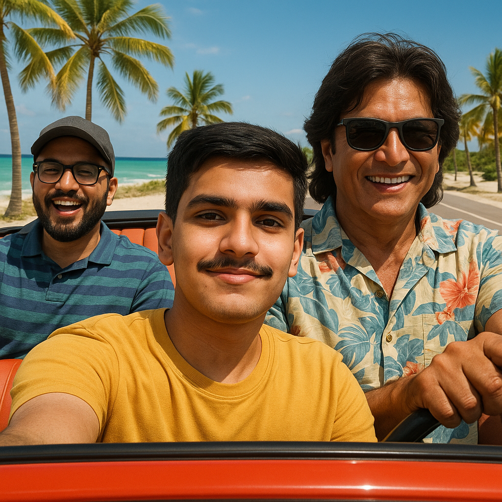
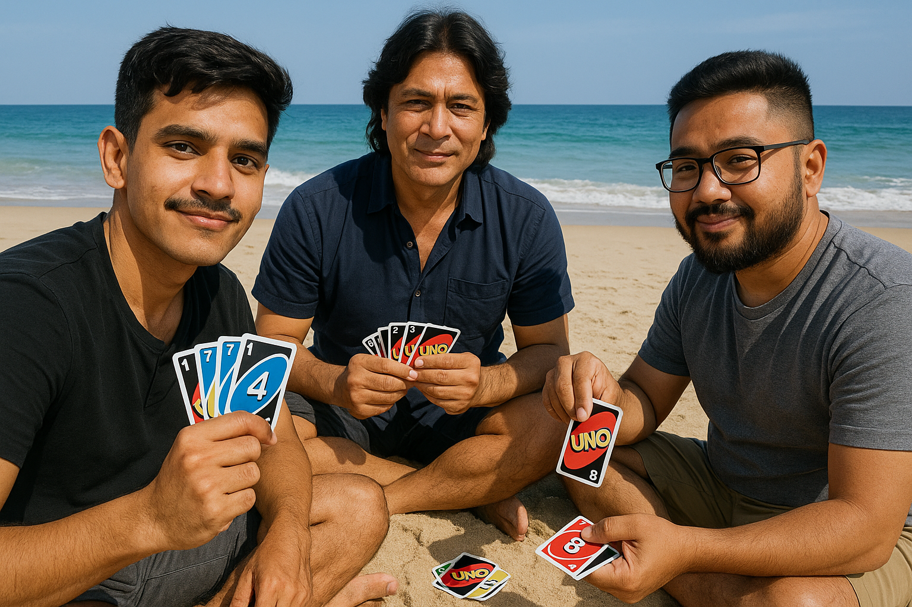

One hot summer morning, Balendra Shah, Rajesh Hamal and I planned a beach trip. We jumped into Balen’s car, rolled down the windows and played loud Nepali music. Balen drove and sang loudly, making us laugh. Rajesh Hamal’s big laugh filled the car and I sat in the back, singing badly and joking about Rajesh’s funny “movie star” voice. The ride was full of songs and fun, getting us excited for the day.
When we got to the beach, the sun was bright and the waves were loud. We picked a spot and started building a sandcastle. Balen was the boss, drawing a cool castle with towers and a water ditch. Rajesh Hamal and I dug sand fast, like helpers. “More water, now!” Balen shouted, smiling as we ran to the sea. Our castle grew tall but a bit crooked and we laughed as we worked together.
In the afternoon when it wasn’t so hot, we sat on the sand and played Uno. The cards went quick and so did our jokes. Rajesh Hamal forgot to say “Uno” once and we all yelled. Balen was sneaky, giving us extra cards, but I won with a wild card. “I’m the champ!” I said, and they groaned but gave me high-fives with sandy hands.
When the sun went down, we went to a fun club. The music was loud and lights flashed everywhere. Rajesh Hamal danced like a star, making people cheer. Balen danced with tons of energy and I joined in, laughing as we tripped over each other. We danced together, having the best time, like the night would never end.
Tired but happy, we got back in the car to went home. The ride was quiet and we all smiled, feeling good. “Next time, we’ll do even better,” Balen said softly. We nodded, already thinking about our next big day out.